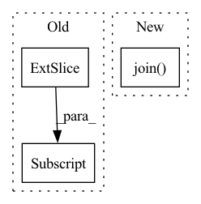

Pattern ID :25834
Before Change
def __init__(self, path):
paths = np.load(path)
self.pcds = paths[:, 0]
self.imgs = paths[:, 1]
self.poses = paths[:, 2]
def __len__(self):
return len(self.imgs)After Change
class BaymaxDataset(Dataset):
def __init__(self, path):
N = len(os.listdir(os.path.join( path, "in") ))
self.pcds = [os.path.join(path, "ex", "%d_downsample.pcd" % i) for i in range(N)]
self.imgs = [os.path.join(path, "in", "%d.npy" % i) for i in range(N)]
self.poses = [os.path.join(path, "ex", "pose_%d.npy" % i) for i in range(N)]In pattern: SUPERPATTERN
Frequency: 3
Non-data size: 3
Instances Fragment ID: 78195657
Project Name: ai4ce/deepsoro
Commit Name: a1c9fae238d912958a98f0a643d2c0f96c426f0d
Time: 2021-06-18
Author: ruoyuwang@nyu.edu
File Name: dataset.py
M Class Name: BaymaxDataset
N Class Name: BaymaxDataset
M Method Name: __init__(2)
N Method Name: __init__(2)
M Parent Class: Dataset
N Parent Class: Dataset
M File Name: dataset.py
N File Name: dataset.py
M Start Line: 18
M End Line: 21
N Start Line: 20
N End Line: 23
Before Change
0.01, 0.01, name0, transform=fig.axes[0].transAxes,
fontsize=5, va="bottom", ha="left", color=txt_color)
txt_color = "k" if image1[-100:, :150] .mean() > 200 else "w"
fig.text(
0.01, 0.01, name1, transform=fig.axes[1].transAxes,
fontsize=5, va="bottom", ha="left", color=txt_color)After Change
txt_color = "k" if image0[-100:, :150].mean() > 200 else "w"
fig.text(
0.01, 0.01, "\n".join( small_text) , transform=fig.axes[0].transAxes,
fontsize=5, va="bottom", ha="left", color=txt_color)
plt.savefig(str(path), bbox_inches="tight", pad_inches=0) Fragment ID: 78195661
Project Name: magicleap/supergluepretrainednetwork
Commit Name: 82b22d07ef3378cac5c46b4e8973a5f326f71e40
Time: 2020-03-30
Author: ddetone@magicleap.com
File Name: models/utils.py
M Class Name: AnonimousClass
N Class Name: AnonimousClass
M Method Name: make_matching_plot(14)
N Method Name: make_matching_plot(15)
M Parent Class:
N Parent Class:
M File Name: models/utils.py
N File Name: models/utils.py
M Start Line: 453
M End Line: 482
N Start Line: 455
N End Line: 477
Before Change
res, img_info, resized_info, _ = self.annotations[index]
if self.imgs is not None:
pad_img = self.imgs[index]
img = pad_img[: resized_info[0], : resized_info[1], :] .copy()
else:
img = self.load_resized_img(index)
After Change
if self.cache_type == "ram":
img = self.imgs[index]
elif self.cache_type == "disk":
img = np.load(os.path.join( self.cache_dir, f"{filename.split(".")[0]}.npy") )
else:
img = self.load_resized_img(index)
Fragment ID: 78195666
Project Name: megvii-basedetection/yolox
Commit Name: 33f48a9231045f944ecc31b6b940af9c15f506cb
Time: 2022-12-23
Author: yuangpeng.cn@gmail.com
File Name: yolox/data/datasets/coco.py
M Class Name: COCODataset
N Class Name: COCODataset
M Method Name: pull_item(2)
N Method Name: pull_item(2)
M Parent Class: Dataset
N Parent Class: Dataset
M File Name: yolox/data/datasets/coco.py
N File Name: yolox/data/datasets/coco.py
M Start Line: 201
M End Line: 208
N Start Line: 225
N End Line: 234